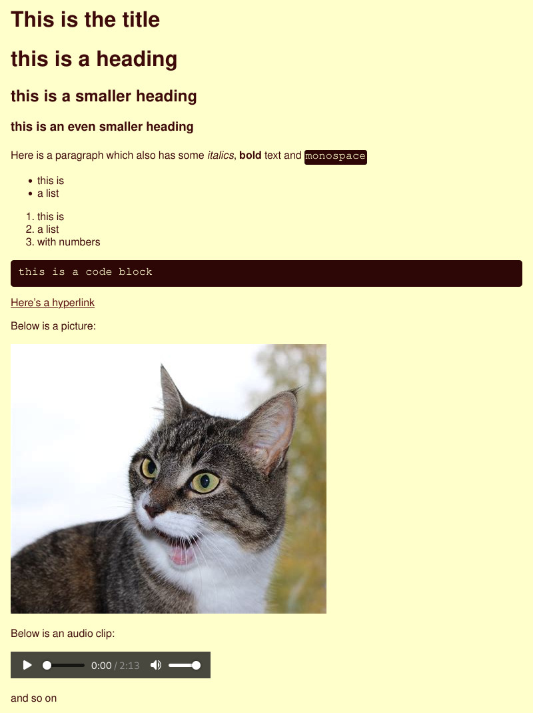

Repository structure and article formatting
All the content in the wiki lives in the /content folder of the repository and consists of pages written in markdown with a little bit of extra metadata.
Article formatting
The source of an article will look somewhat like this
index.md:
---
title: "This is the title"
tags: ["tag", "tag2"]
---
# this is a heading
## this is a smaller heading
### this is an even smaller heading
Here is a paragraph which also has some
*italics*, **bold** text and `monospace`
* this is
* a list
1. this is
2. a list
3. with numbers
```
this is a code block
```
[Here's a hyperlink](https://youtu.be/dQw4w9WgXcQ)
Below is a picture:

Below is an audio clip:
{{< audio this-is-a-sound-clip.mp3 >}}
and so on
The compiled article will look like this:

The article metadata is between the 2 --- lines at the top and you need to at minimum add the title: metadata when creating an article.
The {{< audio filename.mp3 >}} is a custom Hugo shortcode made for this wiki, it is not a part of the markdown language.
Besides these exceptions, the rest of the article is just normal markdown. If you want to learn more about markdown you can check out Markdown Guide
The file structure of an article should look like this:
content/
└── category
└── the-name-of-your-article
├── index.md
├── this-is-a-picture.jpg
└── this-is-a-sound-clip.mp3
If your article doesn’t have any pictures or audio you don’t have to put it in it’s own subfolder and can instead do this.
content
└── category
└── the-name-of-your-article.md